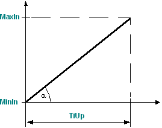

RATE_LIM: Rate-of-change limitation
The RATE_LIM (FB429) block limits the rate of change and the minimum and maximum values of the input signal.
Functionality
Rate limiter
The function calculates and limits the rate of change as follows:
Signal increase | Max. rate of change on signal increase = [MaxIn] - [MinIn] / [TiUp]
 If the input signal [In] exceeds the maximum rate of change on signal increase, the rate of change for the output signal [Out] is limited. The output value [Out] thus only increases in a linear manner.
|
Signal decrease | Max. rate of change on signal decrease = [MaxIn] - [MinIn] / [TiDn]
If the input signal [In] drops below the maximum rate of change on signal decrease, the rate of change for the output signal [Out] is limited. The output value [Out] thus only decreases in a linear manner.
|


Minimum and maximum values
[MinIn] and [MaxIn] limit the output value [Out].

Minimum value | If input value [In] is smaller than [MinIn], output value is set to [Out] = [MinIn]. |
Maximum value | If input value [In] is greater than [MaxIn], output value is set to [Out] = [MaxIn]. |
Enabling and disabling the function
When [EnFnct] = 1 (Yes), the function is enabled.
When [EnFnct] = 0 (No), the function is disabled. Input [In] is available at output [Out].
Inputs
Pin | E | Description | |
EnFnct | p | Enable function. 1 (Yes): The function is enabled. 0 (No): The function is disabled. | |
In | pa | Input. | |
TiUp | pa | Rise time from [InMin] to [InMax]. Example: Valve rise time. | |
0 | No limitation of the signal increase. | ||
TiDn | pa | Fall time from InMin to InMax. Example: Valve fall time. | |
0 | No limitation of the signal decrease. | ||
MaxIn | pa | Maximum input signal. Defines the maximum output value [Out]. Example: Maximum valve position 100 %. | |
MinIn | pa | Minimum input signal. Defines the minimum output value [Out]. Example: Minimum valve position 0 %. | |
Outputs
Pin | E | Description |
Out | a | Output. |
Input values
Pin | Description | Data type | Default value | E.g. Engineering unit or Text group | Min. | Max. |
EnFnct | Enable function. | Boolean | 1 (Yes) | No, Yes |
|
|
In | Input. | Real | 0.0 | % |
|
|
TiUp | Rise time InMin to InMax. | Time | 0ms | T#0d_0h_0m_0s_0ms |
|
|
TiDn | Fall time InMax to InMin. | Time | 0ms | T#0d_0h_0m_0s_0ms |
|
|
MaxIn | Maximum input signal. | Real | 100.0 | % |
|
|
MinIn | Minimum input signal. | Real | 0.0 | % |
|
|
Output values
Pin | Description | Data type | Default value | E.g. Engineering unit or Text group | Min. | Max. |
Out | Output. | Real | 0.0 | % |
|
|
Application
Adjustment of a manipulated variable to the valve runtime.
Limitation of the rotational speed of pumps and funs to avoid plant swinging and to conserve actuators.
Process response
Standard (see General rules and information).
Troubleshooting
Standard (see General rules and information).